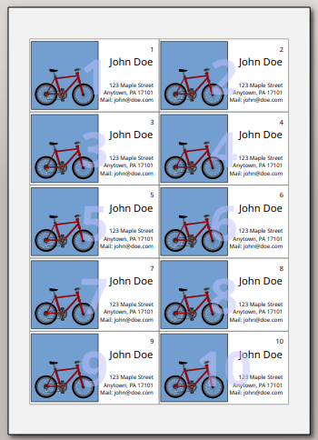
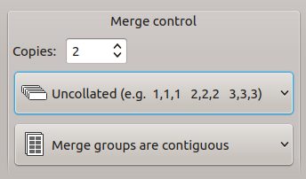

Printing Your gLabels Project
To print labels or cards, choose File ➡ Print to display the Print panel. Or click on Print in the sidebar.
Under Destination, your default printer device will be displayed. Click on it to change it to another device or the print to a .pdf file. There are no other configuration options available; to fine-tune the printer properties, click on Use system print dialog… at the bottom of the window.
Once print options have been selected, click Print to print the labels or cards. You see a print preview at the right side of the window.

In the Print panel you can specify the following print options:
The number of copies of the label can be selected by choosing the number of Pages to print, or a specific subset of labels on a single sheet. Change the values of Position to exclude labels from printing (you see what you exclude in the preview on the right). You must select coherent labels; free selection is not possible. If you have a “sparse” sheet with several gaps in the middle, you can split the print job into multiple parts.
For labels or cards using the document merge (also known as “mail merge”) capability, the Merge control part contains the following merge controls instead of copy controls:

The total number of labels or cards printed is the product of the number of records in the merge source and the number of copies selected. If multiple copies are selected, these can be either Collated (copies of the same record grouped together) or Uncollated (one copy each record is printed before next copy). Furthermore, you can change if Merge groups are contiguous or Merge groups start on a new page.
Printing can begin on any label on the first sheet. This can be selected with the Start on label spinbutton.
The mini-preview can also be used to graphically select this first label, by clicking on the desired label in the mini-preview.
Options
The following options can also be selected:
print outlines
Print outlines of labels. This option is useful for dry-runs, to test printer alignment.
print in reverse
Prints the labels as mirror images. This option is useful for printing on clear labels that will be viewed from the reverse side (for example, in a car window).
print crop marks
Prints crop marks along the edge of the sheet. This option is useful for printing on blank stock, to be cut after printing. This option does not work well with all templates.